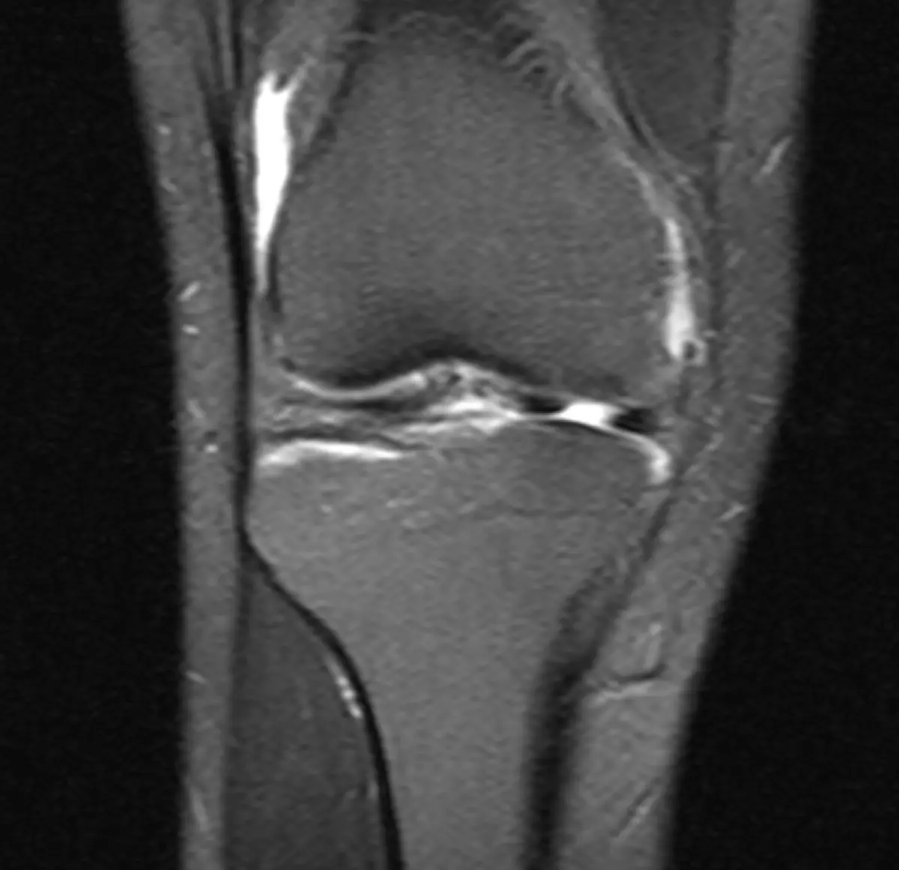
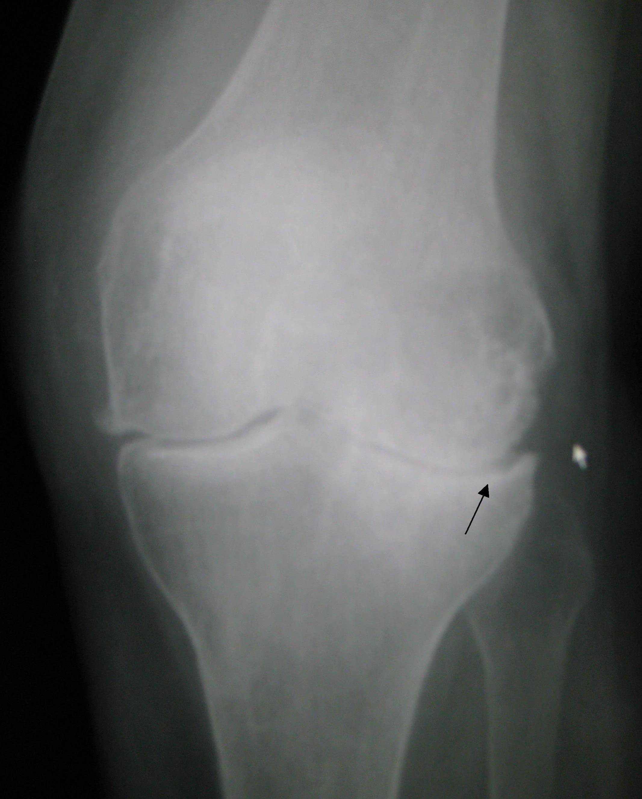
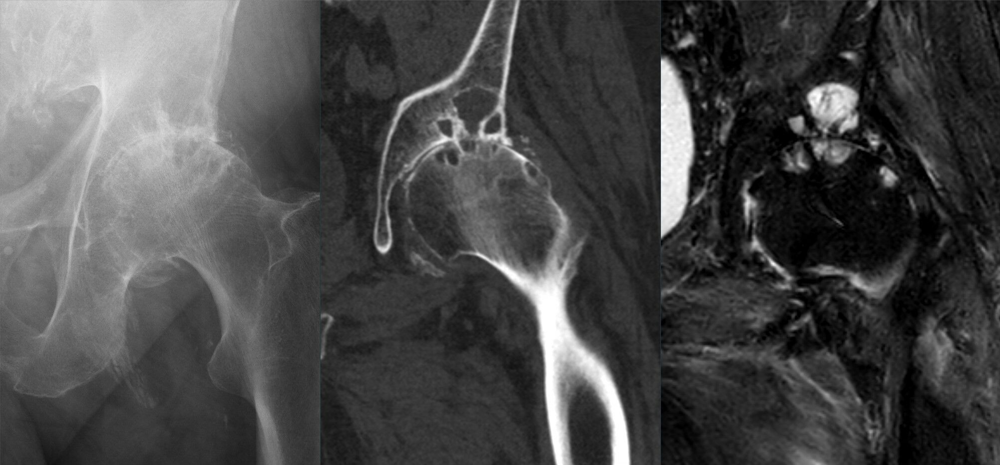
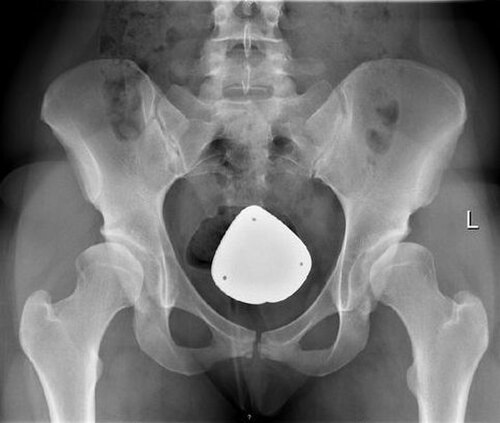
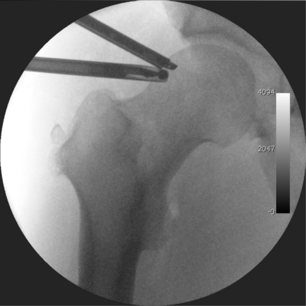
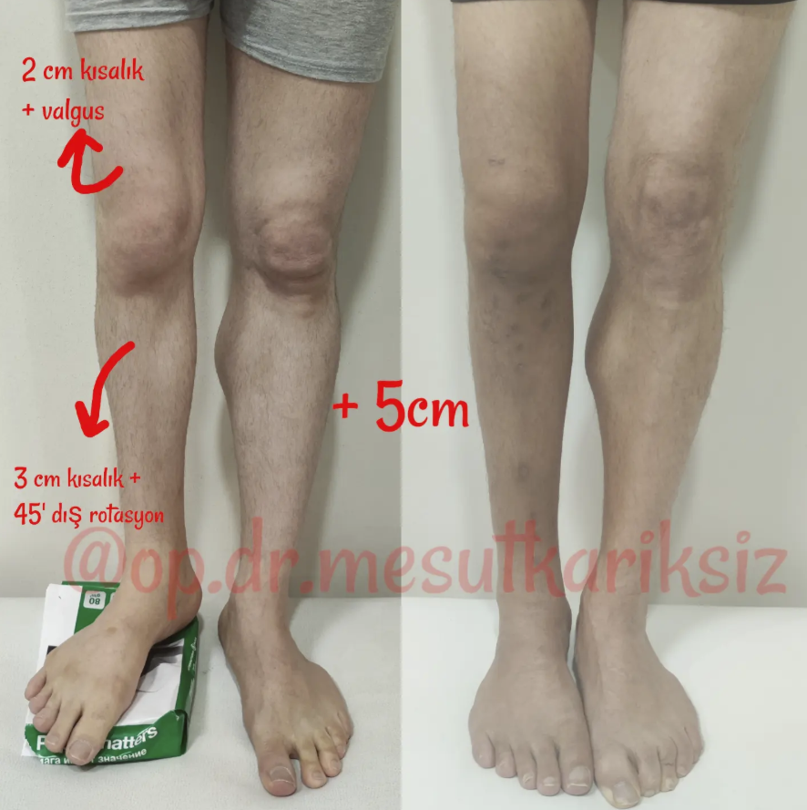
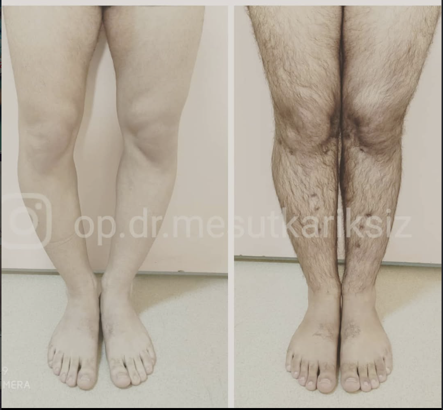
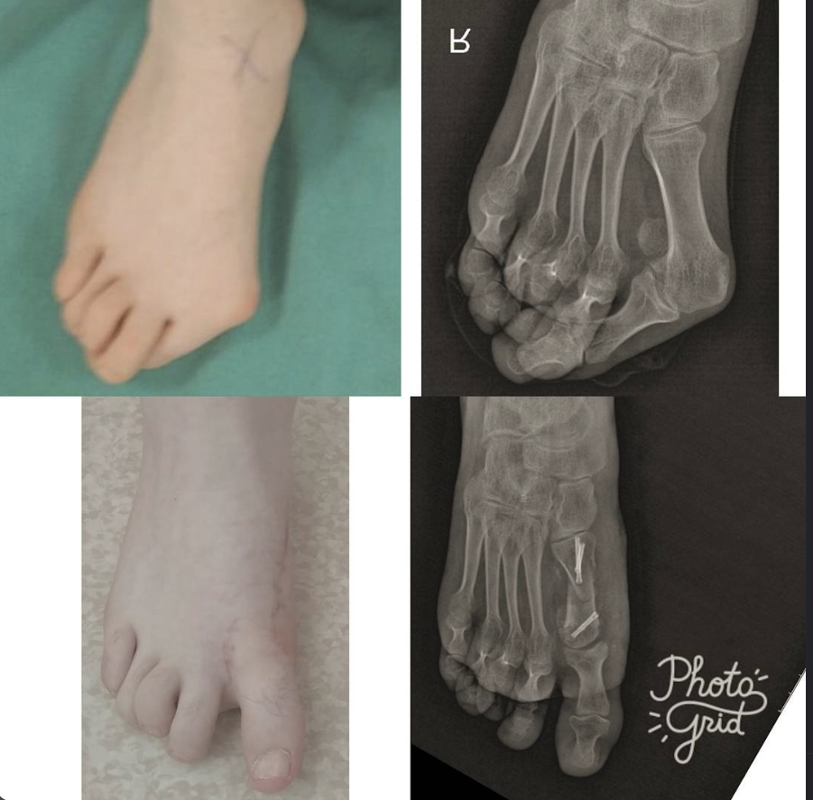

DİZ
DİZÖn çapraz bağ yaralanmaları
Ön çapraz bağ, dizin dönme hareketleri sırasında stabilitesine katkı sağlar. Yaralanmanın tedavisi muayene, aktivite düzeyi ve görüntüleme bulgularına göre planlanır.
Klinik deneyim ve akademik çalışmalarıyla ortopedi ve travmatoloji alanında.
İletişim bilgileri Ortopedi ve Travmatoloji
Ortopedi ve Travmatoloji
“Ortopedi ve travmatoloji alanındaki klinik deneyimimi bilimsel çalışmalarla destekliyorum.”
Doç. Dr. Mesut Karıksız, ortopedi ve travmatoloji uzmanıdır. Mesleki ve akademik çalışmaları; alt ekstremite deformiteleri, uzatma ve eksternal fiksatör uygulamaları başta olmak üzere ortopedinin farklı alanlarını kapsamaktadır.
Tıp doktoru · Ortopedi ve Travmatoloji uzmanı · Doçent doktor
DİZÖn çapraz bağ, dizin dönme hareketleri sırasında stabilitesine katkı sağlar. Yaralanmanın tedavisi muayene, aktivite düzeyi ve görüntüleme bulgularına göre planlanır.

DİZMenisküsler diz ekleminde yük dağılımına yardımcı kıkırdak yapılardır. Yırtıkların tedavisi yırtığın yeri, şikâyetler ve muayene bulgularına göre değerlendirilir.
 DİZ
DİZEklem kıkırdağındaki hasar ağrıya veya hareket kısıtlılığına neden olabilir. Hasarın yeri ve boyutu, tedavi seçeneklerinin değerlendirilmesinde önem taşır.
 DİZ
DİZDiz kapağının eklem oluğundan çıkması ağrı ve şişliğe yol açabilir. İlk veya tekrarlayan çıkıklarda yaklaşım, muayene ve eşlik eden hasarlara göre belirlenir.
 OMUZ
OMUZOmuz çevresindeki kas ve tendon yırtıkları ağrıya ve kol hareketlerinde güçlüğe neden olabilir. Yırtığın kapsamı muayene ve gerekli görüntülemelerle değerlendirilir.
 OMUZ
OMUZOmuz çıkığında eklem yüzleri normal konumundan ayrılır; çevre dokular da etkilenebilir. Tedavi planında çıkığın tekrarlayıp tekrarlamadığı ve eşlik eden hasarlar dikkate alınır.
Kalça eklemindeki kemik yapıların bazı hareketlerde teması ağrı ve hareket kısıtlılığına neden olabilir. Tanı, klinik değerlendirme ve uygun görüntülemelerle konur.
Kalça artroskopisi, küçük kesilerden kamera ve ince cerrahi aletlerle eklemin değerlendirilip uygun durumlarda tedavi edildiği bir yöntemdir.
Ayak bileği artroskopisi, eklem içindeki sorunların kamera yardımıyla değerlendirilmesine ve uygun durumlarda tedavisine olanak sağlar.
Bu sorunların değerlendirilmesi; muayene ve gerekli tetkiklerle kişiye özel yapılır. Uygun tedavi seçenekleri hekim görüşmesinde ele alınır.
Ayak başparmağının diğer parmaklara yönelmesi ve eklem çevresinde çıkıntı oluşmasıdır. Ağrı ve günlük yaşama etkisine göre tedavi seçenekleri değerlendirilir.
Parmağın eklemlerinden bükülü pozisyonda kalmasıyla ortaya çıkan şekil değişikliğidir. Deformitenin esnekliği, bası noktaları ve şikâyetler değerlendirilir.
Ayak iç kavisinin azalması veya yere yaklaşmasıdır. Her düz tabanlık belirti vermez; değerlendirme ağrı, işlev ve muayene bulgularına göre yapılır.
Ayak kavsinin normalden yüksek olduğu yapısal durumdur. Basınç dağılımı, denge ve eşlik edebilecek diğer bulgular muayenede ele alınır.
Plantar fasya dokusunun zorlanması topuk tabanında ağrıya neden olabilir. Topuk ağrısının nedeni ve uygun yaklaşım klinik değerlendirmeyle belirlenir.
Median sinirin el bileği düzeyinde sıkışması elde uyuşma, karıncalanma veya güç kaybına yol açabilir. Cerrahi gevşetme dahil seçenekler, sinir etkilenmesi ve muayene bulgularına göre değerlendirilir.
Parmağın bükülüp açılırken takılması veya kilitlenmesiyle kendini gösterebilir. Tedavi, yakınmaların şiddeti ve tendon kılıfındaki etkilenmeye göre planlanır.
Ganglion, eklem veya tendon çevresinde görülebilen, içi sıvı dolu bir kitle oluşumudur. İzlem veya tedavi kararı; ağrı, hareket kısıtlılığı ve muayeneye göre verilir.
Uygun koşullardaki kopma yaralanmalarında parmağın damar, sinir ve diğer dokularının mikroskop altında onarılması hedeflenir. Bu yaralanmalar acil tıbbi değerlendirme gerektirir.
İnce damar ve sinirlerin büyütme altında onarılması, seçilmiş yaralanmalarda doku dolaşımı ve sinir devamlılığının yeniden sağlanmasına yardımcı olabilir.
 01
01Mevcut eklem protezinde gevşeme, aşınma veya başka bir sorun olduğunda nedenin belirlenmesi önemlidir. Revizyon cerrahisinin gerekliliği ve kapsamı kişiye özel değerlendirilir.

02Diz eklemindeki kıkırdak aşınması ağrıya ve hareket kısıtlılığına neden olabilir. Tedavi seçenekleri bulguların düzeyine ve kişinin günlük yaşamına etkisine göre ele alınır.
 03
03Diz protezi, ileri eklem hasarında ağrı ve işlev kaybı için değerlendirilebilen cerrahi seçeneklerden biridir. Uygunluk, muayene ve görüntüleme bulgularıyla belirlenir.
 04
04Kalça protezi, eklem hasarının belirgin ağrı ve hareket kısıtlılığına yol açtığı durumlarda gündeme gelebilir. Cerrahi kararı kişinin sağlık durumu ve değerlendirme sonuçlarına göre verilir.

05Kalça eklemindeki kıkırdak yapının zamanla bozulması ağrıya ve hareketlerde zorlanmaya neden olabilir. Tanı ve tedavi planı klinik değerlendirmeyle oluşturulur.
 06
06Ganz (periasetabular) osteotomi, uygun hastalarda kalça yuvasının konumunu düzeltmeyi amaçlayan eklem koruyucu bir cerrahidir. Uygunluk, kalça yapısı ve eklem durumu incelenerek değerlendirilir.
Kök hücre uygulamalarının uygunluğu, hastanın klinik durumu ve bilimsel kanıtlar doğrultusunda hekim tarafından değerlendirilir.
 ORTOBİYOLOJİK TEDAVİ
ORTOBİYOLOJİK TEDAVİKök hücre uygulamalarının içeriği ve kullanım alanları yönteme göre değişebilir. Bilimsel kanıtlar, olası yarar ve riskler ile kişiye uygunluk hekim tarafından değerlendirilmelidir.
PRP, kişiden alınan kan örneğinin hazırlanmasıyla trombosit yönünden zengin bir ürün elde edilmesini amaçlar. Kullanım alanı ve beklenen sonuçlar tanı ve mevcut kanıtlar çerçevesinde değerlendirilir.
PLF adıyla belirtilen uygulamanın içeriği ve yöntemi kullanılan protokole göre açıklanmalıdır. Uygunluk, uygulama ayrıntıları ve mevcut kanıtlar hekim görüşmesinde ele alınır.
Eksozom adıyla sunulan uygulamaların içeriği ve klinik kanıt düzeyi farklılık gösterebilir. Kullanım kararı verilmeden önce yöntemin niteliği, belirsizlikleri ve kişiye uygunluğu değerlendirilmelidir.
Sanakin, kişiden alınan kanın belirli koşullarda işlenmesiyle hazırlanan serumun kullanıldığı bir uygulamadır. Uygunluğu tanı, klinik durum ve mevcut bilimsel kanıtlar doğrultusunda değerlendirilir.
Her yöntem her hasta için uygun olmayabilir. Tanı ve tedavi planı muayene sonrasında belirlenir.
Bel fıtığının sinir dokusuna baskı yaptığı seçilmiş durumlarda, endoskopik yöntemle fıtık dokusuna müdahale değerlendirilebilir. Yöntemin uygunluğu muayene ve görüntüleme ile belirlenir.
Omurga kanalındaki daralma sinirler üzerinde baskıya ve yürüme güçlüğü gibi yakınmalara yol açabilir. Cerrahi yaklaşım, darlığın yeri ve kapsamına göre planlanır.
Omur kemiklerinden birinin diğerine göre yer değiştirmesi bel veya bacak yakınmalarına neden olabilir. Endoskopik yöntemin uygunluğu omurganın stabilitesi ve görüntüleme bulgularına göre değerlendirilir.
İlaç, görüntüleme eşliğinde sinir kökünün omurgadan çıktığı bölgeye uygulanır. Hangi durumlarda kullanılacağı ve olası riskleri hekim tarafından değerlendirilir.
İlaç, kuyruk sokumu bölgesindeki doğal açıklıktan epidural alana ulaştırılır. İşlem kararı, yakınmalar ve muayene bulguları birlikte değerlendirilerek verilir.
Faset eklemlerden kaynaklandığı düşünülen ağrılarda, ilgili sinir dallarına radyofrekans enerjisi uygulanabilir. İşlem öncesi ağrının kaynağı ve yöntemin uygunluğu değerlendirilir.
Kemiklerin kontrollü biçimde uzatılmasını amaçlayan tedaviler, dikkatli planlama ve düzenli takip gerektirir. Yöntem ve hedefler kişinin sağlık durumu ile beklentilerine göre değerlendirilir.
Doğuştan gelen bu nadir durumda kaval kemiğinde kırık ve kaynamama gelişebilir. Kemik yapısı ve mevcut deformiteye göre uzman değerlendirmesiyle tedavi planı oluşturulur.
Hemimeli, doğuştan bir uzuv kemiğinin kısmen veya tamamen gelişmemesiyle görülebilen bir durumdur. Değerlendirme ve tedavi planı etkilenen kemiklere, büyümeye ve işlevsel ihtiyaçlara göre yapılır.
Osteomiyelit kemik dokusunun enfeksiyonudur ve zamanında tıbbi değerlendirme gerektirir. Tedavi; enfeksiyonun etkeni, yaygınlığı ve kişinin genel durumuna göre planlanır.
Akondroplazi, kemik büyümesini etkileyen genetik bir iskelet gelişim durumudur. Ortopedik takipte uzuv dizilimi, eklem sağlığı ve kişinin işlevsel gereksinimleri ele alınır.
Bacak eksenindeki içe veya dışa yönelim büyüme döneminde görülebilir ya da farklı nedenlerle gelişebilir. Yaş, eğriliğin derecesi ve ilerleyişi değerlendirilerek izlem veya tedavi seçenekleri belirlenir.
Ultrason, iğnenin ve hedef dokunun işlem sırasında görüntülenmesine yardımcı olur. Uygulanacak ilaç, bölge ve işlem gerekliliği tanı ve muayene bulgularına göre belirlenir.

ÇOCUK ORTOPEDİSİGelişimsel kalça displazisinde kalça ekleminin yuvası ve uyluk kemiği başının ilişkisi etkilenebilir. Erken tanı ve tedavi yaklaşımı, çocuğun yaşına ve muayene bulgularına göre belirlenir.
 ÇOCUK ORTOPEDİSİ
ÇOCUK ORTOPEDİSİPEV, ayağın doğuştan içe ve aşağıya dönük olduğu bir şekil bozukluğudur. Tedavi yöntemi ve takip sıklığı deformitenin özelliklerine ve tedaviye yanıta göre planlanır.
Serebral palside kas tonusu ve hareket kontrolündeki farklılıklar kemik-eklem gelişimini etkileyebilir. Ortopedik değerlendirme çocuğun hareket kapasitesi ve ihtiyaçlarına göre yapılır.

ORTOPEDİKalça artroskopisi, küçük kesilerden kamera yardımıyla eklemin değerlendirilmesini sağlar. Çocuk ve ergenlerde kullanım kararı, tanı ve eklem gelişimi dikkate alınarak verilir.
Bu başlıklar genel bilgilendirme amaçlıdır. Tanı ve tedavi seçenekleri hekim muayenesiyle kişiye özel belirlenir.






Görseller bilgilendirme amaçlıdır. Her hastanın değerlendirme ve tedavi süreci kişiye özeldir.
Özgeçmişinde yer alan klinik ve akademik çalışmalar doğrultusunda öne çıkan başlıklar.
Deformite değerlendirmesi ve düzeltme yöntemleri üzerine çalışmalar.
Eksternal fiksatörler, uzatma uygulamaları ve bilgisayar destekli planlama.
Kırık tedavisi, travma sonrası komplikasyonlar ve kemik iyileşmesi.
Omuz instabilitesi, artroskopik cerrahi ve spor yaralanmaları üzerine akademik çalışmalar.
El, el bileği ve üst ekstremite ortopedisine ilişkin bilimsel çalışmalar.
Çocuklarda ortopedik sorunlar ve alçı tedavisi üzerine yayınlar.
Tıp eğitimi, uzmanlık ve görev bilgileri özgeçmişinde yer aldığı şekildedir.
Dicle Üniversitesi
Tekirdağ Namık Kemal Üniversitesi, Ortopedi ve Travmatoloji Anabilim Dalı
Tekirdağ Namık Kemal Üniversitesi, Ortopedi ve Travmatoloji
Gazi Yaşargil Eğitim ve Araştırma Hastanesi
Özel Sultan Hastanesi
Özgeçmişte yer alan hakemli dergi makalelerinden seçilmiş örnekler.
European Journal of Trauma and Emergency Surgery
Annals of Clinical and Analytical Medicine
Journal of Orthopaedic Surgery and Research
Acta Orthopaedica Brasileira
Journal of Orthopaedic Surgery
Sorular yükleniyor…
Bu sayfadaki bilgiler genel bilgilendirme amacı taşır; tanı ve tedavi için hekiminize başvurunuz.